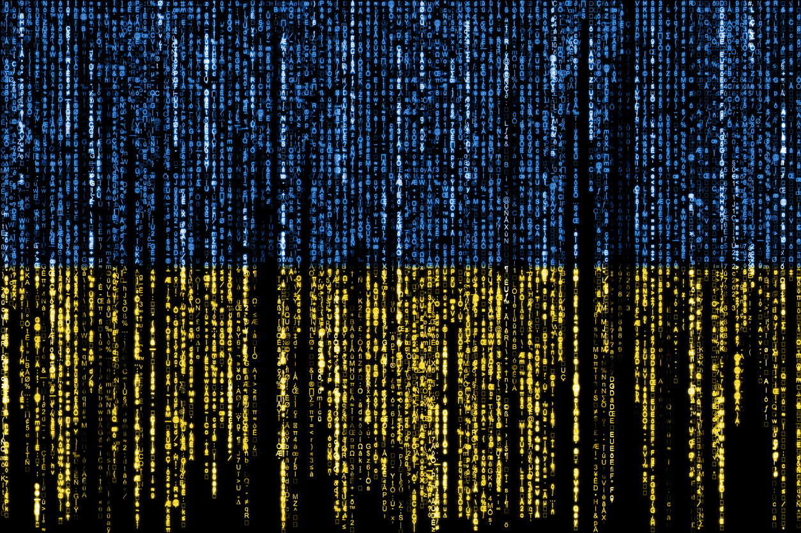

Threat Intelligence : Flux Chronologique (2026)
Le ministère des Sports victime d’une fuite de données de « Mon compte Asso »
Le site French Breaches a révélé qu’une fuite de données affectait le service de demande de subvention. Un pirate informatique a dérobé une partie des informations saisies par les associations concernées avant de les mettre en vente sur un forum cybercriminel.
Ouvrir l'article d'origine
Cybermalveillance.gouv.fr lance la MalletteCyber Pro à destination des TPE-PME
La plateforme nationale d’assistance cyber annonce un nouvel outil de sensibilisation gratuit à destination des petites et moyennes entreprises, présenté officiellement à l’occasion de la Grande Assemblée des Entrepreneurs.
Ouvrir l'article d'origineOpération Endgame : Europol coordonne le démantèlement d’Amadey et de StealC
Europol a coordonné le démantèlement des infrastructures de trois logiciels malveillants : Amadey, StealC et SocGholish. Les autorités de six pays ont déconnecté 326 serveurs, 142 domaines et saisi 27 millions d’identifiants volés.
Ouvrir l'article d'origineBajaj Auto, géant indien de l’automobile, victime d’une attaque par rançongiciel
Le constructeur automobile indien a été touché par un rançongiciel affectant ses activités et celles de sa filiale technologique. Cet événement met en lumière la vulnérabilité des systèmes industriels et des chaînes logistiques globales.
Ouvrir l'article d'origineUkraine : une cyberattaque pro-russe perturbe l’application de l’opérateur postal public
L’opérateur public ukrainien Ukrposhta a subi de lourdes perturbations applicatives suite à une cyberattaque ennemie ciblée. Les équipes spécialisées ont été mobilisées en urgence pour rétablir les services critiques de distribution.
Ouvrir l'article d'origineDeux membres de Scattered Spider plaident coupables du piratage de Transport for London
Deux cybercriminels du groupe anglophone ont reconnu leur responsabilité dans l'attaque majeure contre l'autorité des transports londonienne. L'incident a paralysé les services pendant des mois, exposant les données usagers et coûtant 34 millions d’euros.
Ouvrir l'article d'origineMesVaccins.net victime d’une fuite de données
L'éditeur Syadem a confirmé l'exfiltration de données personnelles médicales par un tiers non autorisé. La plateforme gère le carnet de vaccination numérique (CVN) des particuliers et des professionnels de santé.
Ouvrir l'article d'origine
Fuite de données à la Fédération sportive de la police nationale : 224 000 personnes concernées
La FSPN a déposé plainte suite à une cyberattaque d'envergure. Les données compromises touchent potentiellement plusieurs années d'historique de licences professionnelles de l'institution.
Ouvrir l'article d'origineAbonnements payants sur les réseaux sociaux : identifier les auteurs de contenus illicites
Pour contrer le pseudonymat et l'anonymat protégeant les auteurs de harcèlement ou diffamation, les données bancaires et d'identifications liées aux nouveaux abonnements payants deviennent un levier d'enquête majeur pour la justice.
Ouvrir l'article d'origineDémantèlement du botnet SocGholish, pilier de l’écosystème cybercriminel russe
Une coalition policière internationale (Pays-Bas, USA, Allemagne, Canada) a neutralisé des composants vitaux de SocGholish, une infrastructure majeure infectant les serveurs d'entreprises mondiales pour le compte d'acteurs russes.
Ouvrir l'article d'origineUtiq, le mouchard ultime, monte en puissance
Parallèlement aux enjeux de traçabilité d'Utiq, le secteur français des télécoms tremble avec l'accord de rachat et de démantèlement de SFR à l'horizon 2027 par Bouygues, Free et Orange, soulevant des questions d'infrastructures massives.
Ouvrir l'article d'origineL’Ukraine rejoint la réserve de cybersécurité de l’Union européenne
L'Union européenne a acté l'intégration de l'Ukraine au sein de son mécanisme de réponse collective coordonné par l'ENISA, ouvrant ce bouclier défensif aux partenaires extérieurs du programme Europe Numérique.
Ouvrir l'article d'origine
France : Searcher, le moteur indexant des données personnelles volées, visé par la justice
Le site Searcher, qui agrégeait de manière illégale plus de 1,2 milliard de données compromises (notamment issues de l'ANTS et de l'Assurance Maladie), ferme son accès gratuit sous la pression judiciaire française.
Ouvrir l'article d'origineLe secteur technologique, cible privilégiée des cybercriminels affiliés à la Chine
Le rapport annuel de CrowdStrike démontre que l'écosystème technologique mondial subit une pression d'espionnage massive, 58 % des intrusions étatiques identifiées provenant d'acteurs rattachés à Pékin.
Ouvrir l'article d'origineAlmerys : une nouvelle cyberattaque qui interroge la résilience du tiers payant
L'opérateur Almerys a confirmé la compromission de sa plateforme d'attribution des prises en charge. L'attaque a forcé les mutuelles majeures (Alan, AG2R) à alerter en urgence leurs assurés sur les risques de défaillance systémique.
Ouvrir l'article d'origineRATP : une fuite de données pourrait concerner plus de 62 000 employés
Mise en vente sur le Dark Web d'un fichier sensible contenant les structures organisationnelles, e-mails, identifiants internes et fiches de postes de plus de 62 000 collaborateurs de la régie des transports parisiens.
Ouvrir l'article d'origine